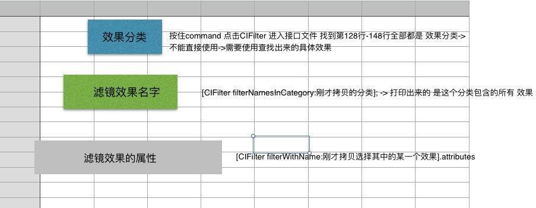
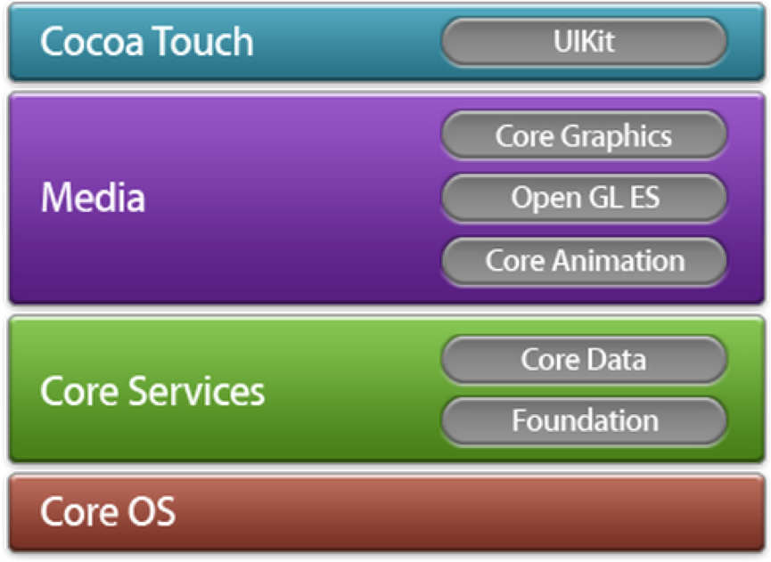

消息转发机制、消息调用的过程
kvo的实现原理
静态库与动态库
库(library)就是一段编译好的二进制代码,加上头文件来供别人使用。
使用库的情况:
- 当我们想封装代码给别人使用而不想别人看到源码
- 当代码不会经常改动，可以将其打包成库，减少编译时间
动态库、静态库
库分为两种静态库和动态库
静态库:在链接时会被直接复制目标程序中，这样在编译完成后程序并没有外部依赖，但是目标程序会变大
动态库:动态库在链接时并不会被拷贝到目标程序中，目标程序只会存储指向动态库的引用，程序运行后，动态库才会真正加载进来，动态库不需要拷贝到程序中，不影响程序体积，同一份库可以被多个程序使用，但是使目标程序依赖于外部环境
iOS
静态库在windows中为.lib mac和linux下为.a mac下还有 .framework
动态库在windows下为.dll mac为.dylib和.framework linux下为.so (系统提供的framework都是动态库)
在iOS开发中还会用到Framework，在iOS8之前 只能使用苹果的framework动态库，而在iOS8之后，开发者可以自己打包framework，但是自己开发的framework还是类似静态库，需要拷贝到app中，苹果又把这种 Framework 称为 Embedded Framework
iOS 控制器转场
参考知识网站:iOS 视图控制器转场详解
我们平常所说的转场动画 = 转场+动画，两者互不相关。不管是简单的转场动画还是炫酷的转场动画，你想要的效果那是动画的事情，完全是另外一个话题。
文章前言
视图控制器转换View Controller Transition : 在 NavigationController 里 push 或 pop 一个 View Controller，在 TabBarController 中切换到其他 View Controller，以 Modal 方式显示另外一个 View Controller，这些都是 View Controller Transition;
在iOS7之前我们只能使用系统提供的转场动画，仅仅够用而已，7之后开放了相关API允许我们进行转场动画的定制。
如果对VC的结构不够了解推荐看:View Controller Programming Guide for iOS
接下来进入正题.
Transition
iOS 滤镜
CIFilter实现滤镜效果
参考网址:CoreImage滤镜学习
CoreImage框架介绍
1.是一个图片框架 基于OpenGL顶层创建，底层用着色器来处理图像
2.利用GPU基于硬件加速来处理图像
3.CoreImage中有很多滤镜
4.它们能够一次给予一张图像或者视频帧多种视觉效果 -> 滤镜链
5.滤镜可以连接起来组成一个滤镜链 把滤镜效果叠加起来处理图像
CIFilter使用介绍
CIFilter滤镜类中有很多的滤镜效果 这里不一一列举，可以按住command 点击CIFilter 进入接口文件 找到第128行-148行全部都是 效果分类常用效果
我们使用时需要先找到需要的效果类型 比如我们使用kCICategoryDistortionEffect失真的效果类型，有了效果类型我们需要找到里面我们需要的效果.
NSLog -> [CIFilter filterNamesInCategory:刚才拷贝的分类];
比如CIColorMonochrome,然后就可以使用这个滤镜效果
CIFilter *filter = [CIFilter filterWithName:@"CIColorMonochrome”];
然后打印这个效果中包含了那些属性:
NSLog(@"%@",filter.attributes);
在里面我们可以看到好多属性，里面是多个字典的形式，找到我们想要修改的属性(key值) 然后在他对应的value里面查看一下他的属性类型，比如我们打印的CIColorMonochrome里面有一个inputColor，他是一个CIColor类型的，有默认值，这里我们写了一个CIColor来给他进行赋值.
赋值时需要用kvc的方式:
[filter setValue:colorforKey:kCIInputColorKey];
实现滤镜效果代码
首先我们创建一个全局变量的UIImageView，然后让他初始化出来,这个就是我们要处理的图片 一般我们从手机相册中取出来:
@interface ViewController ()<UINavigationControllerDelegate,UIImagePickerControllerDelegate>
{
UIImageView *imageView;
}
@end
然后我们需要从相册中取出一张图片,保存起来:
//跳转相册的触发方法
- (void)doit{
UIImagePickerController *vc = [[UIImagePickerController alloc]init];
vc.delegate = self;
[self presentViewController:vc animated:YES completion:nil];} //让图片显示在VC上面的方法
- (void)imagePickerController:(UIImagePickerController *)picker didFinishPickingMediaWithInfo:(NSDictionary<NSString *,id> *)info
{
NSLog(@"%@",info);
//获得选中的图像
UIImage *chooseImage = info[UIImagePickerControllerOriginalImage];
//先是在试图空间上
imageView.image = chooseImage;
[self dismissViewControllerAnimated:YES completion:nil];
}接下来就是对图片进行滤镜处理:
- (void)addColorFilter{
//CIImage 保存图像数据的类
CIImage inputImage = [CIImage imageWithCGImage:imageView.image.CGImage];
//先打印NSLog(@"%@",[CIFilter filterNamesInCategory:kCICategoryDistortionEffect]);进去找到需要设置的属性(查询效果分类中都有什么效果) 可以设置什么效果
//然后通过[CIFilter filterWithName:@""];找到属性 具体效果的属性
//然后通过KVC的方式设置属性
NSLog(@"%@",[CIFilter filterNamesInCategory:kCICategoryDistortionEffect]);
/
1.查询 效果分类中 包含什么效果：filterNamesInCategory:
2.查询 使用的效果中 可以设置什么属性（KVC） attributes使用步骤 1.需要添加滤镜的源图
2.初始化一个滤镜 设置滤镜（根据查询到的属性来设置）
3.把滤镜 输出的图像 和滤镜 合并 CIContext -> 得到一个合成之后的图像
4.展示
*/
//CIFilter 滤镜类 图片属性进行细节处理的类
CIFilter *filter = [CIFilter filterWithName:@"CIColorMonochrome"];
NSLog(@"%@",filter.attributes);
//这个属性是必须赋值的，假如你处理的是图片的话
[filter setValue:inputImage forKey:kCIInputImageKey];
CIColor *color = [CIColor colorWithRed:1.000 green:0.759 blue:0.592 alpha:1];
[filter setValue:color forKey:kCIInputColorKey];
//CIContext 上下文是实现对图像处理的具体对象 用来把滤镜和图片合成成为一张图片 滤镜对象输出的图像并不是合成之后的图像，需要使用图片处理的上下文 合并输出图像
CIContext *context = [CIContext contextWithOptions:nil];
CIImage *outPutImage = filter.outputImage;
//CGImageRef->图像中的数据
CGImageRef image = [context createCGImage:outPutImage fromRect:outPutImage.extent];
imageView.image = [UIImage imageWithCGImage:image];
}注意：
对滤镜进行赋值之后图片就有了，但是我们这个时候拿出这个图片的时候发现他并没有发生变化，因为它只是单一进行了滤镜处理，还没有和原图片进行一个糅合。使用CIContext找到上下文对他进行糅合：
//extent得到图像的尺寸 合并一个包含源图 滤镜效果的图片
//1 滤镜输出的图像 2.合成之后图像的尺寸 图像.extent
CGImageRef imageRef = [context createCGImage:outPutImage fromRect:outPutImage.extent];
注意:
假如你的图片消失了，请检查一下，第一步获取图片的时候一定要获得图片的CGImage再来来获取，不要直接使用imageView.image.CGImage。滤镜链:
在给一张图片添加多种滤镜效果的时候，我们把它称为滤镜链，我们再添加滤镜链的时候，就是把图片添加一层滤镜，然后，和原图片糅合处理，然后在处理之后的图片上再添加一层滤镜，并不是直接给一张图片添加了两层路径，所以称为滤镜链。
我们继续使用这个图片，在它添加第一层滤镜的时候做一些修改://上接给效果属性赋值 //把下面注释的给注释掉，然后添加一个方法
//CIContext
// CIContext *context = [CIContext contextWithOptions:nil];
CIImage *outPutImage = filter.outputImage;
[self addFilterLinkerWithImage:outPutImage];
// CGImageRef image = [context createCGImage:outPutImage fromRect:outPutImage.extent];
// imageView.image = [UIImage imageWithCGImage:image];
//再次添加滤镜 -> 形成滤镜链
- (void)addFilterLinkerWithImage:(CIImage *)image
{
CIFilter *filter = [CIFilter filterWithName:@"CISepiaTone"];
[filter setValue:image forKey:kCIInputImageKey];
CIContext *context = [CIContext contextWithOptions:nil];
CGImageRef resultImage = [context createCGImage:filter.outputImage fromRect:filter.outputImage.extent];
imageView.image = [UIImage imageWithCGImage:resultImage];
//把添加好滤镜效果的图片 保存到相册
//不可以直接保存 outputImage -> 这是一个没有吧滤镜效果和源图合成的图像
UIImageWriteToSavedPhotosAlbum(imageView.image, self, @selector(image:didFinishSavingWithError:contextInfo:), nil);
}
//保存图片回调
- (void)image:(UIImage *)image didFinishSavingWithError:(NSError *)error contextInfo:(void *)contextInfo
{
NSLog(@"保存成功");
}这样就是一个双重的滤镜效果,同时保存到了相册.
系统自带简单的滤镜效果
iOS中主要框架
1. 系统框架层
每个框架对应IOS系统里的一层，每层建立在它下面层的上面。应该尽量使用上层的框架来代替下面的框架。更高层次的框架是对底层框架基于对象的抽象。

2. 两个基础框架
iOS应用程序基于Foundation和UIKit框架
Foundation
Foundation框架为所有的应用程序提供基本系统服务你的应用程序，UIKit和其它的框架都是建立在Foundation框架上面的。Foundation框架是用Object-C对CoreFoundation框架里许多特性的封装。
使用Foundation可以:
- 创建和管理集合，比如数组和字典
- 访问存储在应用程序里的图片和其它资源
- 创建和管理字符串
- 提交和接收通
- 创建日期和时间对象
- 自动发现IP网络上的设备
- 操作URL流
UIKit
所有的iOS应用程序都基于UIKit，你不能是应用程序脱离这个框架。UIKit提供了在屏幕上绘制的机制，捕获事件，和创建通用用户界面元素。UIKit也通过管理显示在屏幕上的组件来组织复杂的项目。
使用UIKit可以：
- 访问存储在应用程序里的图片和其它资源
- 构建和管理你的用户界面
- 捕获触摸和基于移动的事件
- 呈现文字和web内容
- 优化多任务程序
- 创建定制的用户界面元素
- 捕获触摸和基于移动的事件
3. 其他重要框架
Core Data , Core Graphics, CoreAnimation,和OpenGLES框架都是高级的技术
1. **CoreData框架管着理应用程序数据模型**
Core Data提供对象的管理，使用CoreData，你可以创建模型对象，并管理这些对象。你管理这这些对象间的联系并修改数据。CoreData提供的内建SQLlite技术可以高效的管理数据。
使用CoreData可以:
- 在库里存储和接受对象
- 提供基本的undo/redo
- 自动验证属性值
- 过滤、分组和优化内存中的数据
- 用[NSFetchedResultsController]管理表视图中的结果
- 支持基于文档的应用程序
2. **CoreGraphics框架帮助你创建图形
3. **CoreAnimation允许你创建高级的动画和虚拟效果
4. **OpenGL ES框架提供2D和3D绘图工具